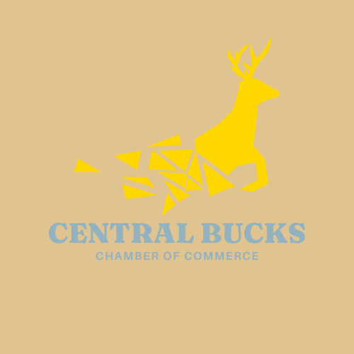

Central Bucks Chamber Site Plan
Connor Hopkins
Purpose
We are here to help businesses connect to build up community influence. We believe that that the stronger the commmunity is, the stronger the businesses become. With more community activity comes more business interaction. The key to a successful business is embracing ways to service those around them through genuine connection, which starts here at the Central Bucks Chamber.